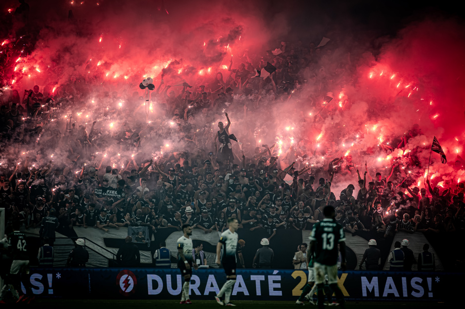
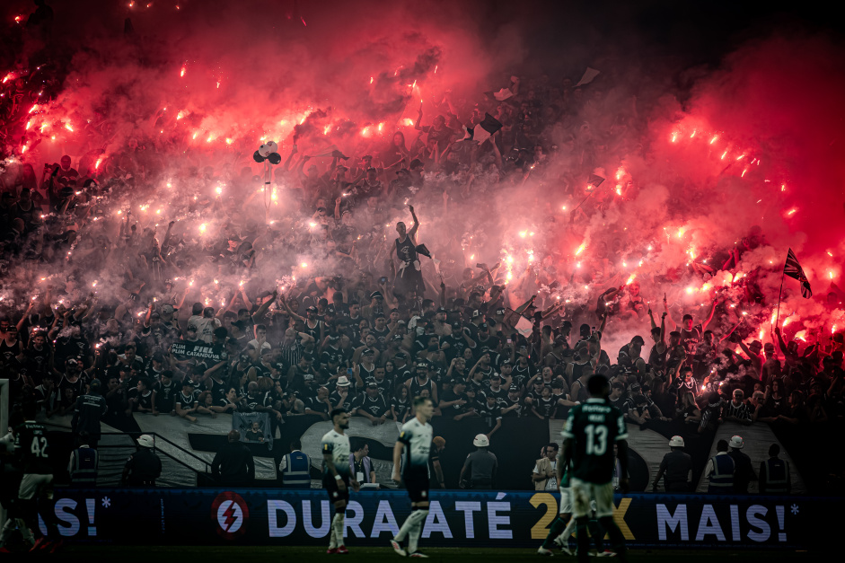

Sport Club Corinthians Paulista

Menu
Bem-vindo!
Esse é o site sobre o Corinthians. Use o menu ao lado para navegar pelas seções.
Links Externos
Site OficialNotícias GE
Wikipedia
Sport Club Corinthians Paulista
|
||
Menu |
Bem-vindo!Esse é o site sobre o Corinthians. Use o menu ao lado para navegar pelas seções.  |
Links ExternosSite OficialNotícias GE Wikipedia |
| © 2025 - Site feito por bocadas | ||